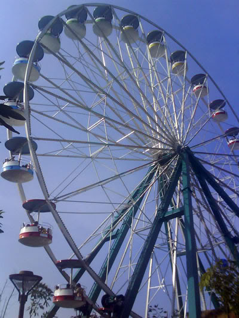
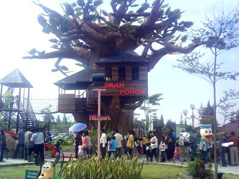
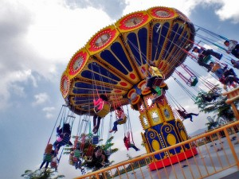

Hillpark Sibolangit merupakan sebuah tempat yang wajib anda kunjungi apabila anda melancong ke kota Medan.
Hillpark Sibolangit adalah sebuah taman bermain (themepark) yang terletak di Sibolangit dan diklaim sebagai yang terbesar di pulau Sumatera.
Terbagi menjadi 3 tema besar yaitu Lost City, Toon town, dan Heritage. Wahana yang ada diantaranya Roller Coaster (Gelegar), Ferries Wheel (Kincir raksasa), 4D theatre, dan amphiteathre berkapasitas 1,200 untuk pertunjukan dan konser.

Jika dilihat, taman bermain Hill Park yang ada di Sibolangit ini mirip dengan Dufan yang ada di Jakarta, atau dengan Trans Studio yang ada di Makassar dan Bandung.
Tetapi berbeda dengan Dufan, HillPark ini masih lebih kecil.
Dinamakan HillPark karena lokasinya sendiri berada di pegunungan Sibolangit, di mana waktu tempuhnya sekitar satu jam dengan mobil dari Medan. Namanya juga di pegunungan, nggak heran jika jalanan berkelok-kelok.

Apa Saja Tema Permainan yang terdapat di HillPark Sibolangit?
1. The Heritage memiliki nuansa kastil yang megah. Arstitektur bangunan berupa kastil menjadikan anda layaknya prince atau princess.
Kastil ini bernama Kastil Camelot. Terdiri dari permainan indoor dan carnival games untuk menguji kelincahan yang sangat menarik. Permainan: Camelot Shop/Souvenier Shop, Floor projection games, Komedi putar, Ombang ambing, Bom-bom, Bumper boat.
Di sini juga bisa menonton film dengan teknologi 4D.
2. The Lost City memiliki nuansa arsitektur kuno purbakala bebatuan dengan kerangka Dinosaurus.
Di zona ini terdapat berbagai permainan seru seperti Gelegar (Rooler Coaster) dan Kincir Raksasa (Ferries Wheel), Gelegar (akan menguji adrenalin anda), Kincir Raksasa, Telecombat, Ulang Alik, Kereta Hillpark.
Foods: Lost City Food Court.

3. Toon Town memiliki nuansa anak kecil atau balita (kartun).
Di Tema ini terdapat berbagai wahana seru atau permainan khas seperti: Puting Beliung, Mini BomBom, Ajut-Ajut, Baling-Baling, Battery Car, Kincir Mini, Taksi Gila, Tulalit.
Foods: Toon town Foodcourt.
Hillpark Sibolangit
Jl. Letjend Djamin Ginting Km 45 Sibolangit - Sumatera Utara
Telepon: 0628-97610
Hillpark Sibolangit Hanya buka di Hari Sabtu/Minggu & Hari libur Nasional
Tiket masuk Rp. 10,000,- / Orang
Tiket Terusan Rp. 45,000,- / Orang + pintu masuk + 15 x bermain di wahana permainan